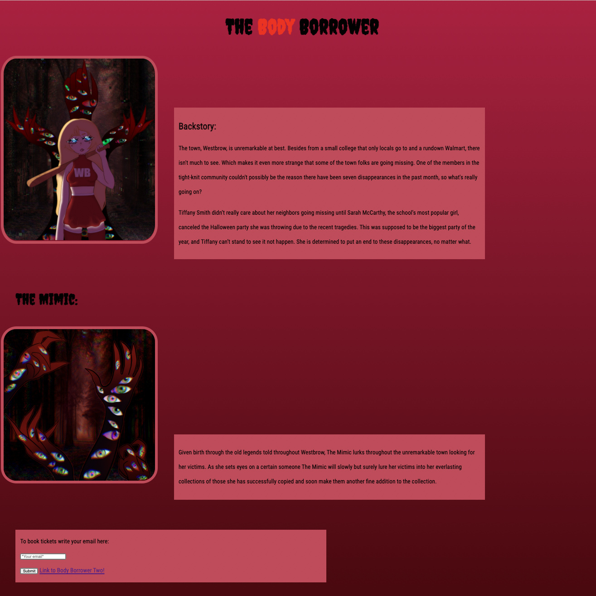

Context: For this project my partner, Jun Jie Li, and I had to make a movie website using the skills we’ve learned so far.
Content: This is the first project that was assigned to the 10th grade this year. We had to work with the person who sat next to us, and my partner and I decided to make a movie about our favorite genres: Horror and Fantasy.
The movie’s premise is that the small fictional town, Westbrow, has had seven disappearances in the past month due to reasons unknown. The protagonist, Tiffany Smith, was completely unbothered by the disappearances that were plaguing her town. Tiffany simply had more important things to do, such as practicing for cheer or planing out how she going to ask Emma Lynn to the movies with her. Well, this is what Tiffany thought until Sarah McCarthy, the school’s most popular girl, canceled the Halloween party she was throwing due to the recent tragedies. This was supposed to be the biggest party of the year, and Tiffany can’t stand to see it not happen. In order to make Sara reconsider canceling, Tiffany has to put an end to what’s causing these disappearances. She soon figures out that what she’s dealing with is much more despicable than a guy with a machete, but instead a creature that is pairs of pitch-black arms covered in eyes.
We accomplished creating this project by using h1 and paragraph (p) elements, divs, spans, importing google fonts, inputs and submits, elements, class, id, padding, border, and margin. I drew the two images on the website by using the digital art app, Procreate. My partner and I worked on it for four days and we are satisfied with the finished product.
Reflection: Some of the challenges my partner and I faced were aligning the text with the images. We struggled with making our paragraphs directly next to the text, and in the end we were unsuccessful. Our teacher, Mr. Muller helped us the best he could, but the materials we needed to make our project look the way we wanted it to were currently too advanced. I also struggled with changing the sizing of the fonts. I made the mistake of setting all the fonts to “0px” and thought I ruined the entire project because I couldn't see what the issue was. I'm ashamed to admit it took me around thirty minutes to find what I did wrong. My biggest takeaways from this project were how to add inputs and properly communicate with a group member I didn't know that well. Before this project I struggled with adding inputs, but thanks to my partner I was able to fully grasp the concept and successfully added the input and submit feature on our project. Despite sitting next to each other, Jun Jie and I never really spoke to one another, so it was at first challenging to work together. Throughout this project I learned to be patient and properly advocate for myself while listening to his concerns as well. The next steps I would like to take is furthering my knowledge of css and website design.
Preview of the project
Behind the scenes
